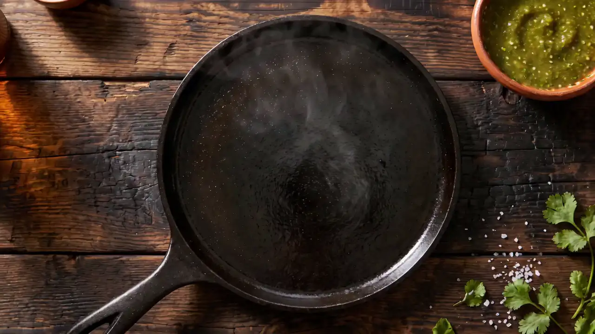
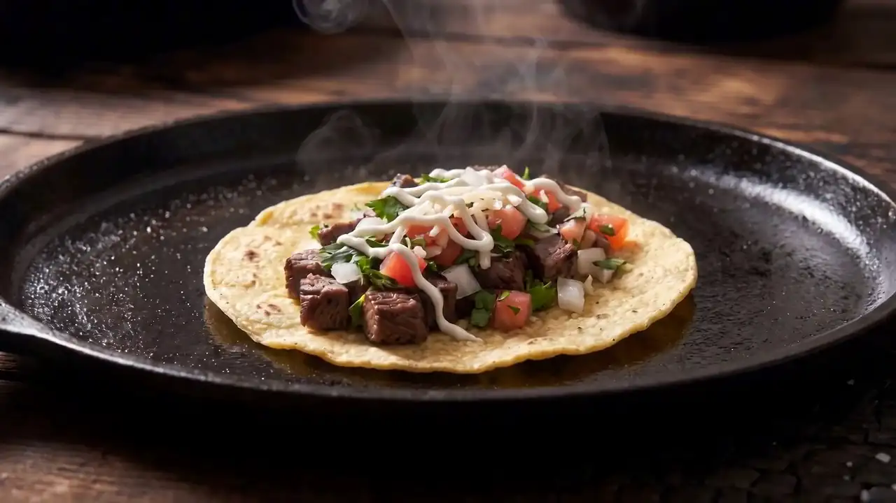

Pupusas
Thick handmade corn tortillas filled with cheese and pork, cheese and beans, loroco and cheese, or zucchini. Served with curtido (tangy pickled cabbage) and salsa.
$3.99 each


Watch a taco come togetherHungry yet?
Tacos, burritos and Salvadoran pupusas on Broadway in Somerville.
Step 1
A warm corn tortilla
Six inches, soft, straight onto the griddle.
Step 2
Off the grill
Steak, chicken, adobada pork, chicharrón, beef tongue or fish.
Step 3
Tomato. Onion. Cilantro.
Pico de gallo, cheese, onion and cilantro.
Step 4
A line of cream
Salsa verde or salsa roja on the side.
Order direct
Ordering through our own page sends your order straight to our kitchen. Order online, then come pick it up. Most orders are ready in 15–20 minutes.
Visit